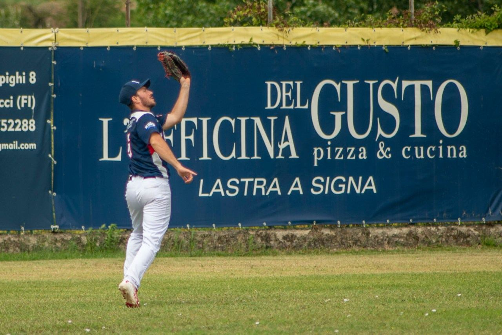
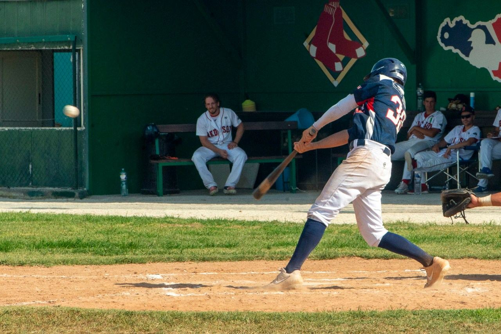

Le regole
La partita
Il Baseball si gioca nell’arco di 9 innings, o riprese, ciascuna delle quali si divide in una frazione offensiva e una difensiva; un inning, dunque, termina quando le squadre si sono alternate in fase di battuta (attacco) e in fase difensiva; una mezza ripresa termina quando la squadra in difesa esegue tre eliminazioni, che le permettono di passare all’attacco. Al termine dei 9 inning la squadra che avrà ottenuto il maggior numero di punti risulterà vincitrice; in caso di parità, si dovranno disputare tante riprese supplementari quante necessarie a rompere l’equilibrio tra le due squadre (il pareggio, infatti, non e’ ammesso).
Durante il gioco, le due formazioni si alternano tra attacco e difesa invertendosi ogni tre eliminazioni. La partita e’ diretta da un arbitro capo, eventualmente aiutato a uno o più arbitri di base.
Hai capito la partita?
La squadra

Una squadra baseball è composta da 9 giocatori, più un numero illimitato di riserve.
In fase di attacco i giocatori, gli stessi che poi si schierano in difesa, a turno, si presentano alla battuta seguendo un prefissato ordine di battuta (o line-up), che non può essere alterato per tutta la durata dell’incontro; se un giocatore esce dalla partita, il suo sostituto entrerà a battere nella stessa posizione del giocatore partente. E’ possibile in certe categorie utilizzare un battitore designato (DH), ovvero utilizzare un decimo giocatore che viene schierato solo in fase offensiva al posto del lanciatore (che quindi non va in battuta), per permettere a quest’ultimo di riposarsi tra una ripresa e l’altra.
Hai capito la squadra?
Le posizioni in campo
In fase di difesa, ogni giocatore occupa una posizione ben precisa in campo, indipendente dall’ordine di battuta; le posizioni sono:
- 1Lanciatore (1)
- 2Ricevitore (2)
- 3Prima Base (3)
- 4Seconda Base (4)
- 5Terza Base (5)
- 6Interbase (6)
- 7Esterno Sinistro (7)
- 8Esterno Centro (8)
- 9Esterno Destro (9)
Hai capito le posizioni in campo?
La difesa

LA DIFESA
In fase difensiva i 9 giocatori si schierano in campo nelle posizioni viste in precedenza, con il compito di mettere a segno le tre eliminazioni che permettono di passare all’attacco; una eliminazione può avvenire:
- Per strikeout; quando un battitore incassa tre strike, questi viene eliminato: uno strike viene chiamato tutte le volte che il battitore gira a vuoto la mazza, o batte in territorio foul (in questo caso però non vale come terzo strike) ed infine quando il lancio, anche se non viene sventolato, passa nella zona dello strike, compresa tra le ascelle, le ginocchia del battitore e il piatto di casa base.
- Per presa al volo; quando un battitore colpisce la palla e questa viene raccolta da un qualsiasi giocatore prima del suo primo rimbalzo, il battitore è eliminato, ed i corridori possono correre solo dopo la presa.
- Per gioco forzato; si parla di gioco forzato, per un corridore, quando questi, in caso di battuta di un compagno, sia costretto a lasciare libera la base al battitore o ad un altro compagno: in pratica, ogni qual volta tutte le basi prima del corridore in questione sono occupate. In situazione di gioco forzato, la difesa può eliminare un avversario semplicemente toccando, in possesso della palla, la base verso la quale l’avversario sta correndo, prima che questi vi arrivi.
- Per toccata; toccando con la mano che tiene la palla, o con il guanto in possesso della pallina un corridore che non è a contatto con la base, questi è eliminato; tale tipo di eliminazione è effettuabile in qualsiasi momento del gioco, ed è l’unico modo possibile in caso di gioco non forzato.
Hai capito la difesa?
L’attacco

L’ATTACCO
L’attacco è la fase di gioco in cui si possono segnare i punti; un punto viene assegnato quando un corridore riesce a completare il giro delle basi senza essere eliminato dalla difesa avversaria. Ecco i principali modi per avanzare sulle basi
- Base su ball; quando un battitore incassa quattro lanci ball, esterni cioè alla zona dello strike, guadagna automaticamente la prima base. Stessa cosa accade se il battitore viene colpito
- Battuta valida; se dopo aver battuto la palla un giocatore giunge salvo in prima base, o oltre, si parla di battuta valida.
- Battuta dei compagni; un corridore che è già in base può avanzare sfruttando le battute dei compagni che lo seguono; in alcuni casi particolari, in cui il battitore viene eliminato, ma il corridore avanza di una base, per il battitore si parla di battuta di sacrificio
- Errore della difesa; altro modo di giungere in base è quello di sfruttare un errore della difesa; in questo caso, al battitore non viene accreditata una valida, ma giunge comunque salvo sulla base.
- Rubata; in qualsiasi momento del gioco, un giocatore può correre verso la base successiva, cercando di anticipare il lancio del pitcher avversario. In questo caso si parla
di base rubata.